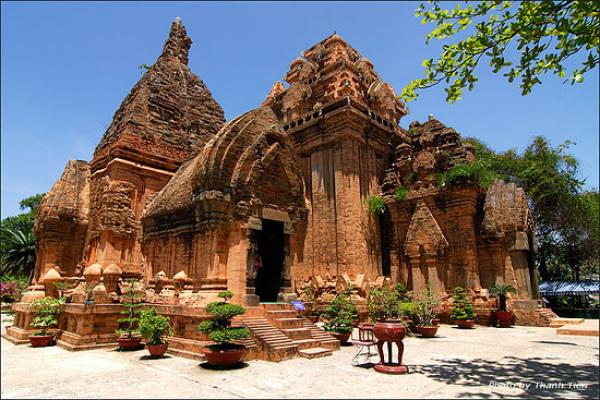
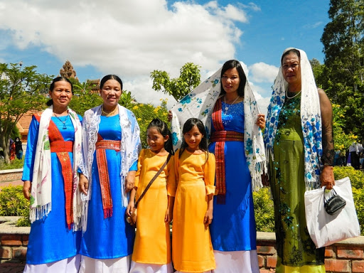
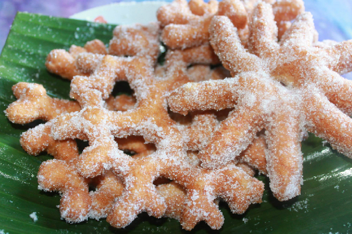

Dân tộc Chăm
Người Chăm là một dân tộc đã từng có một quốc gia Chăm Pa độc lập trong lịch sử, có nền văn hóa phát triển, và là hậu duệ của các cư dân nền văn hóa Sa Huỳnh thời kì đồ sắt.
Ở Việt Nam người Chăm có mối liên hệ gần gũi với các dân tộc nói các tiếng cùng thuộc ngữ tộc Malay-Polynesia như Gia Rai, Ê Đê, Ra Glai và Chu Ru.
Bên ngoài Việt Nam, người Chăm có quan hệ gần gũi với người Mã Lai.
Tương tự như quốc gia của người Việt ở phía Bắc, người Chăm có lịch sử tiếp xúc và định cư lâu đời ở quốc gia Chân Lạp của người Khmer ở phía Nam.
Tại Chân Lạp, từ lâu đã có cộng đồng người gốc Mã Lai, Java sang sinh sống.
Do tương đồng trong ngôn ngữ và tôn giáo, người Chăm từ lãnh thổ Chăm Pa đã cộng cư với người gốc Mã Lai ở Chân Lạp.
Người Chăm được xác định là cư dân bản địa ở khu vực duyên hải Nam Trung Bộ Việt Nam và đã có quá trình định cư lâu đời ở khu vực này. Trải qua hàng ngàn năm, dưới những biến cố lịch sử, xã hội mà chủ yếu là do chiến tranh và mẫu thuẫn nội bộ, người Chăm không còn cư trú tập trung ở khu vực duyên hải Nam Trung Bộ mà phân bố rộng rãi ở khắp các tỉnh phía Nam Việt Nam và một số các quốc gia khác.
Hiện nay tổng số người Chăm trên thế giới khoảng 1.300.000 người, phân bố chủ yếu ở Campuchia, Việt Nam, Malaysia, Thái Lan và Hoa Kỳ. Cộng đồng Chăm lớn nhất thế giới là vào khoảng trên 950.000 người tại Campuchia, được gọi là Khmer Islam; kế đến là Việt Nam. Malaysia thực tế có trên 50.000 người, Thái Lan khoảng 4.000 người[38] và Hoa Kỳ trên 3.000 người.
Video
Sự kiện
Lễ hội Ranuwan
13/9 đến 13/10 dương lịch
Lễ hội Ranuwan hay lễ hội tháng thiêng Ramadan của người đồng bào dân tộc Chăm Bà ni tại Nam Trung Bộ. Đây là tháng Ramadan của người Chăm theo Hồi giáo Bani. Được xem giống như là tết của người Việt Nam hay giáng sinh của phương Tây. Mọi người Hồi giáo trên toàn thể giới, tháng ăn chay hoặc tháng nhịn ăn là khoảng thời gian để tĩnh tâm, để tìm kiếm sự bình an trong tâm hồn.
Lễ hội cầu mưa
Đầu tháng hai âm lịch hàng năm
Lễ hội cầu mưa người Chăm hay lễ mừng mưa tiếng Chăm oai lơ cau chăhơzan là một lễ hội của dân tộc Chăm H'roi, Vân Canh, Bình Định, Việt Nam. Với quan niệm mọi biến chuyển của vũ trụ đều do Phật trời, thần linh hoặc ma quỷ điều khiển. Con người muốn đạt được sở nguyện thì phải cầu nguyện, cúng khấn để được thần linh trợ giúp. Tùy theo thời tiết mà có tên gọi cho từng dịp lễ hội - trời hạn thì gọi là lễ cầu mưa, còn có mưa mà hành lễ thì gọi là lễ mừng mưa.
Kiến trúc
Các tháp Chăm là một khối kiến trúc xây dựng bằng gạch nung màu đỏ sẫm lấy từ đất địa phương, phía trên mở rộng và thon vút hình bông hoa. Mặt bằng tháp đa số là hình vuông có không gian bên trong chật hẹp thường có cửa duy nhất mở về hướng Đông (hướng Mặt Trời mọc). Trần được cấu tạo vòm cuốn, trong lòng tháp đặt một bệ thờ thần bằng đá. Nghệ thuật chạm khắc, đẽo gọt công phu hình hoa lá, chim muông, vũ nữ, thần thánh thể hiện trên mặt tường ngoài của tháp. Các viên gạch liên kết với nhau rất rắn chắc, bền vững tới hàng chục thế kỷ.
Trang phục
Người Chăm theo chế độ mẫu hệ nên người phụ nữ Chăm là trung tâm lưu giữ nét văn hóa đặc sắc, trong đó có áo dài Chăm truyền thống. Để cấu thành một bộ trang phục phụ nữ Chăm truyền thống hoàn chỉnh phải hội tụ đủ các yếu tố gồm: áo dài, váy, talei kabak (dây thắt lưng chéo), talei ka-in (dây thắt lưng ngang), khăn đội đầu, khuyên tai và trang sức đeo cổ bằng hạt cườm đen óng. Khi khoác lên, những trang phục ấy tạo cho người phụ nữ Chăm dáng vẻ quyến rũ và duyên dáng đến lạ kỳ.
Món ăn
Người Chăm có nhiều loại bánh, chủ yếu làm để phục vụ trong lễ nghi tôn giáo, cưới hỏi. Các loại bánh phổ biến là tapei anung (bánh tét), tapei bilik (bánh ít), tapei coh (bánh cuốn), sakaya, ginraong laya (bánh củ gừng), kadaor (giống bánh đúc). Tapei anung cũng như bánh tét người Việt, bánh làm từ nếp, đủ loại nhân như thịt heo, đậu xanh, đậu phộng,… Tapei bilik thì giống như bánh ít. Bánh được làm từ bột nếp, có nhân mặn (đậu xanh) hoặc nhân ngọt (dừa). Hai loại bánh này có mặt hầu hết trong các lễ tục truyền thống Chăm.

"Comment - Like - Share" Module